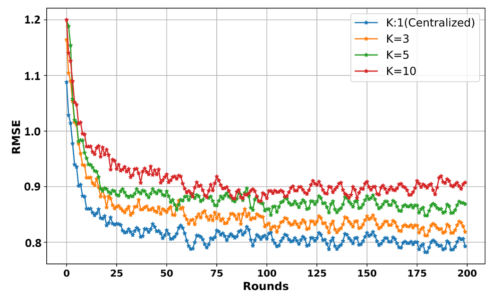
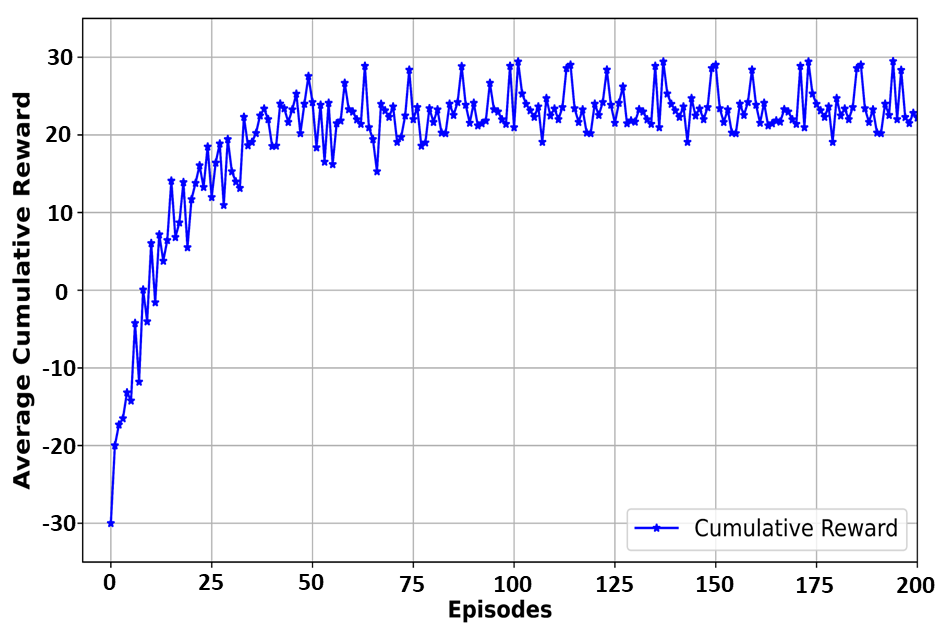
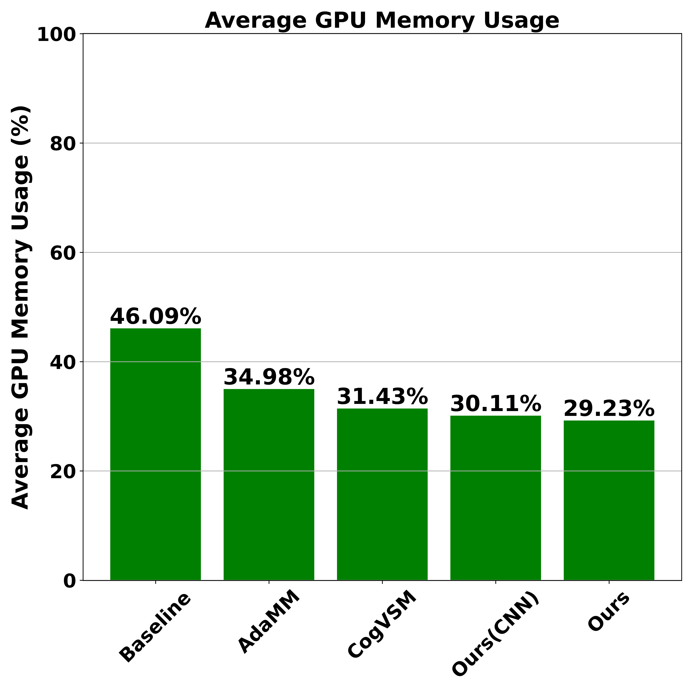

Deep Reinforcement Learning-Empowered Cost-Effective Federated Video Surveillance Management Framework
Enhancing Video Surveillance Efficiency with Deep Learning and Edge Computing
Video surveillance systems have become essential for safety and security, and the integration of deep learning (DL) has significantly improved their precision. However, DL-based surveillance requires substantial computational and memory resources, particularly for tasks like object tracking and object tracking. Traditional video surveillance systems keep using GPU recources regardless of object absence in the video frames. Some recent approaches, for exaple, The AdaMM framework uses a constant threshold for releasing DL models in hierarchical edge computing, but this approach can lead to increased GPU memory consumption or frequent switching delays depending on the constant threshold value. Followingly, the CogVSM framework uses LSTM predictions and EWMA smoothing to manage DL model releases, but it faces privacy issues and limitations due to the static smoothing factor's inability in EWMA to adapt to varying scenarios and learn over time. To address these demands, this study introduces an innovative video surveillance management system using a two-tiered edge computing architecture. The primary edge, located at the video feed source, performs real-time object detection, reducing data transfer latency, while the secondary edge dynamically manages GPU usage with a novel threshold control module. This module employs Deep Q-Network (DQN) methods to optimize the balance between GPU memory usage and model reloading latency. Additionally, federated learning (FL) is utilized to train a Long Short-Term Memory (LSTM) network, ensuring data privacy and efficient resource allocation, ultimately enhancing the system's overall efficiency and security capabilities.
Introduction: Why Saving GPU Resources is So Crucial?
Efficient video surveillance, especially for abnormal behavior detection, heavily relies on Deep Learning (DL) models. These models require substantial GPU resources for tasks like object tracking and motion tracking in real-time. However, all traditional keep using allocated GPU recource even through there is no object in the video feed. So, the saving GPU resources is so crucial that we can be able to utilize saved resources to other deep learning tasks, optimizing computational efficiency. By conserving GPU memory and computing power, surveillance systems can maintain responsiveness, handling more additional surveillance tasks. Thus, prioritizing GPU efficiency in video surveillance enhances overall system performance, bolstering safety and security in various environments.
Proposed Framework
The proposed video surveillance management system for hierarchical edge computing comprises two connected edge nodes. The first node handles object detection using the YOLO algorithm, while the second node manages future object occurrence predictions with an FL-based LSTM, a DQN-based controlling threshold, and motion-tracking modules. The system starts by receiving video frames from an IP camera at the first node, where detected objects and relevant information are sent to the second node for further processing. In the second node, the FL-based LSTM module predicts future object occurrences and informs the DQN-based threshold control module, which makes binary decisions on adjusting threshold time values. This module decides whether to issue a stop command or forward video frames to the motion-tracking module. The DQN model continually updates the threshold time based on its actions to optimize the system's performance. The primary contributions are the FL-based LSTM prediction and DQN-based controlling threshold modules, which enhance prediction accuracy and system efficiency. The LSTM module ensures data privacy by training on multiple CCTV cameras, while the DQN model adapts the threshold to balance cautiousness and quick response times.
Results
The sample simulated video on the right demonstrates the real-time functionality of our project.
The video features two terminals:
The first terminal, located on the bottom left, is dedicated to the server-side operations. It can handle up to 10 clients simultaneously, analyzing human behavior through pose estimation models.
The second terminal, positioned on the bottom right, is used for client-side operations, sending detected object frames and related detection information.
Additionally, the video displays pose estimation results and a line graph that plots real-time GPU memory usage.
The main idea of the video is to show how dynamic model release works in real-time!!!
Key Features
Two-Tiered Edge Computing
In this project, the two-tiered edge computing framework involves two interconnected edge nodes to optimize video surveillance tasks.
The first tier, or edge node, focuses on real-time object detection using the YOLO algorithm, processing video frames directly from IP cameras.
This immediate detection reduces latency by performing computational tasks close to the data source.
The detected objects and relevant information are then sent to the second tier, or edge node, for advanced processing, which includes predicting future object occurrences using an FL-based LSTM model and making intelligent threshold decisions with a DQN model.
The advantages of this two-tiered approach include enhanced scalability and efficient resource utilization.
By distributing tasks between the two nodes, the system alleviates computational load on any single node, leading to faster processing times and reduced network congestion.
The proximity of the first edge node to the data source ensures low latency for critical tasks, while the second node leverages more advanced models for predictive analytics and decision-making.
This division of labor allows for more complex computations without overwhelming the system.
Additionally, the use of FL at the second tier enhances data privacy and security by ensuring that sensitive data remains localized while still contributing to the training of robust predictive models.
The adaptive threshold management by the DQN model further optimizes system performance by dynamically adjusting to changing conditions, thus ensuring efficient processing and resource allocation.
Overall, the two-tiered edge computing system offers a cost-effective, scalable, and secure solution for sophisticated video surveillance applications.
DQN-based Controlling Threshold Module
The DQN-based dynamic controlling threshold module acts as the decision-making center that intelligently determines the controlling threshold time value in the overall system. Here, the threshold time value represents a timeout for deciding whether to hold or release the DL model. The DQN model receives the predicted object occurrence outcomes generated by the LSTM model. These prediction values are then used as state observations for the DQN model to make a crucial decision (i.e., whether to release or hold the DL model into action). The threshold time value is continually updated based on the DQN model's decision. This algorithm operates by continuously monitoring the DQN's action, which adjusts the threshold time value to determine whether to hold or release the DL model into action. If the DQN's action suggests holding the model, the motion-tracking threshold is incrementally increased by one second, ensuring a cautious approach. Conversely, if the action indicates releasing the model, the threshold is decreased by one second, facilitating quicker response times to detected events. This iterative process ensures that the threshold adapts intelligently to the system's needs, optimizing its performance in real time.
FL-based LSTM Module for Object Occurrence Prediction
FL in this project allows the LSTM model to be trained on data from multiple cameras without transferring the raw video data to a centralized server, preserving privacy and reducing the risk of data breaches. Each client optimizes a local model based on its data and shares this model with an FL server, which aggregates these local models to update a global model. This global model is then redistributed to all clients for further refinement, ensuring collaborative learning. By distributing the training process, FL optimizes resource usage, allowing for scalability and efficient utilization of processing power and storage capacity. This approach leverages a larger and more diverse dataset, enhancing the overall accuracy and performance of the video surveillance system while addressing privacy concerns and resource limitations.
Evaluation Results
The evaluation of the FL-based LSTM model in this project demonstrates notable advantages despite some performance differences compared to centralized training. The model was trained for 200 rounds, with results measured using the RMSE metric, revealing that centralized training achieved a lower RMSE value of 0.79. However, the FL-based approach offers significant benefits in terms of data privacy and security by keeping data localized and enabling secure collaboration among multiple clients. This distributed training method also promotes scalability and resource efficiency. Consequently, the FL-based LSTM training is strongly recommended for scenarios where data privacy and ownership are critical, providing a balanced solution with collaborative advantages and secure data handling.
Deep RL-based Dynamic Controlling Threshold Module
The DQN (Deep Q-Network) model is employed to optimize the threshold time for releasing the DL model in the video surveillance system. This model-free approach relies on the predictions from the LSTM model, which captures temporal dependencies of object occurrences, as input to the DQN. The DQN model learns an optimal policy for threshold time adjustment based on these inputs, ensuring efficient resource utilization. By evaluating various factors such as object appearance patterns, system performance, and resource usage, the DQN intelligently decides when to trigger the DL model release. This results in improved overall effectiveness and efficiency of the smart video surveillance system, balancing GPU resource conservation and latency.
Evaluation Results
The evaluation of the DQN-based controlling threshold module highlights its advantages in enhancing the energy efficiency of the video surveillance system. During training, the DQN model used LSTM predictions as input states and quickly learned to balance GPU memory savings with model reloading latency, achieving stable performance after about 50 episodes. The average cumulative reward, which grew rapidly in the initial 20 episodes, indicates the model's effectiveness in optimizing the threshold. Compared to the EWMA-based controlling module, the DQN-based approach showed superior sensitivity and faster response in anticipating object absence, as evidenced by the sample video analysis. This improved accuracy in decision-making ensures efficient resource utilization, reducing model reloading latency while maintaining system performance.
Performance Comparison

The evaluation results highlighted in the figure right side showcase the advantages of the proposed framework in terms of efficient GPU memory utilization. The figure compares the performance of five different frameworks, demonstrating that the proposed framework, aided by LSTM predictions and DQN-based threshold control, outperformed others in managing GPU resources. The efficient release of GPU memory was particularly noticeable during intervals of object absence, where the proposed framework adapted swiftly to changing conditions. Compared to the AdaMM and CogVSM frameworks, which had varying memory usage based on fixed time values \(\theta_m\), the proposed framework dynamically optimized memory use, resulting in lower consumption and improved efficiency. Additionally, the proposed framework's performance with a CNN model, although slightly less efficient than with LSTM, still surpassed the AdaMM and baseline approaches, emphasizing the robustness and adaptability of the proposed method.
Results
The bar graph in Figure 9 highlights the evaluation results of average GPU memory usage when \(\theta_m = 10\) seconds. Our proposed framework demonstrated significantly optimized memory utilization at 29.23%, followed closely by our proposed framework with CNN at 30.11%. This efficiency stems from the novel integration of FL-based LSTM and DQN-based intelligent controlling threshold modules, which dynamically manage GPU resources based on real-time predictions and decisions. CogVSM also performed well, with GPU memory consumption at 31.43%, utilizing an LSTM model and statistical EWMA technique. AdaMM, employing a constant controlling threshold, showed higher memory usage at 34.98%, while the baseline approach had the highest usage at 46.09% due to its constant loading of GPU memory regardless of object presence.
